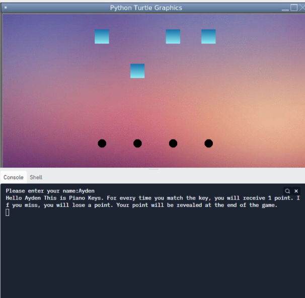
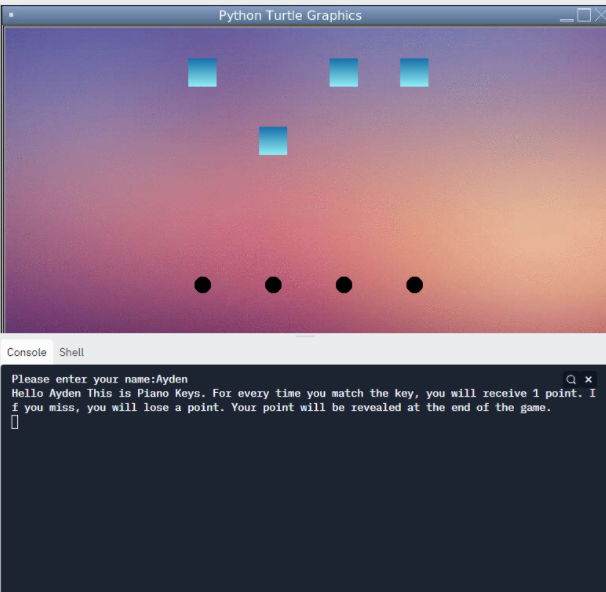
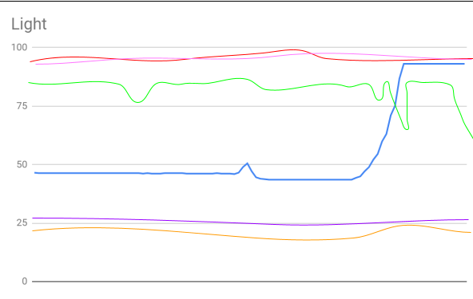
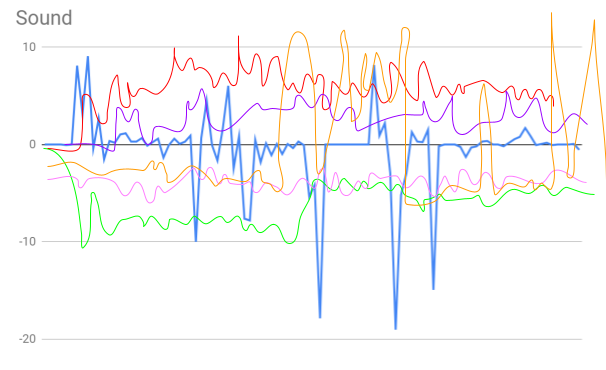
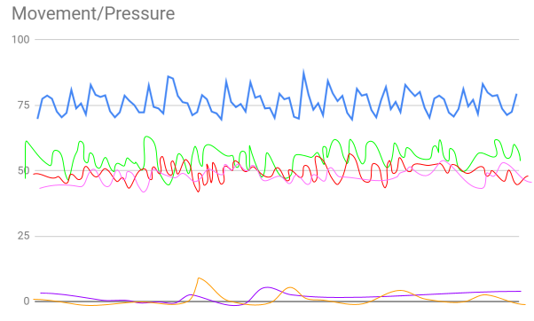
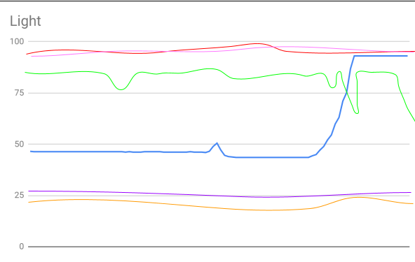
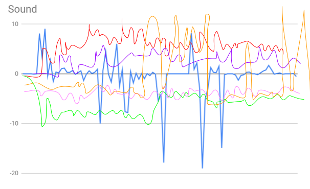
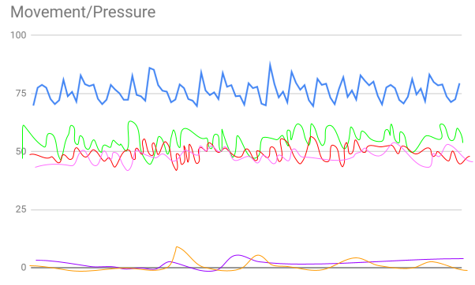
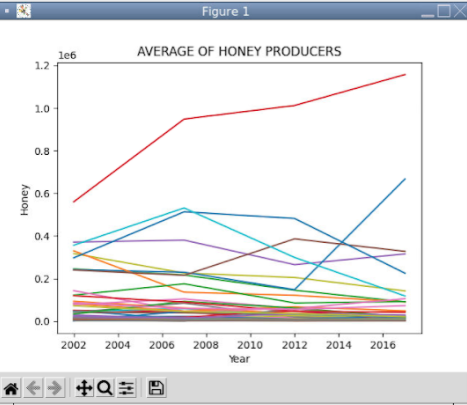
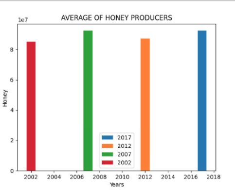

This is my Portfolio Page!
Ice Cream Maker 1.1.9 Project
This is our first project from PLTW Lesson 1.1.9. The ice cream stand is on the bottom of the screen including images of the 2 different flavors and a drawing of cherries on the side. It tells the user the 2 scoops we have available (Minion Fever and Banana Swirl) and that each scoop is 2 dollars and a cherry will cost an extra dollar. The program asks the user for their name, what flavor they want (flavor 1 or 2), how many scoops, and whether they want a cherry or not. If they user chooses a flavor other than #1 or 2, the program will continue to run until they pick correctly. They can add as many scoops as they want and no matter how high the last scoop is, a cherry will be added on top if they would like. Finally, the program calculates the total of the ice cream based on their scoops and additional cherry.

Piano Keys 1.2.5 Project
This is our PLTW 1.2.5 Project called Piano Keys. The program will begin by gathering the user’s name and letting them know how the point system works in our game. 1 point will be deducted for every time you miss the turtles on the bottom(detectors) and added when the falling turtles match the turtles on the bottom(detectors). The detectors’ shapes are circles and the falling turtles are shiny blue squares. The detectors will change color if they miss and will change or remain as black if they match it. A random turtle will fall, matching the beats to the music and will reset after reaching a certain point. The objective of the game is to correctly time the falling turtle to match the detectors on the bottom.When the game/song ends, the total points will be calculated and revealed to the user.
 

Scratch project.
Our Scratch Project was a story game. The interaction we added was pressing space to catch the robber. We used different procedures to limit specific interactions within the characters in our story. The lemonade stand girl is robbed by a little girl, but later is caught by a centaur. This educational story teaches all users the lesson of not stealing from others.
PLTW 3.1.6 Project
 





Marsh Land
This is our PLTW 3.1.6 Project. We first tried to match which data represented sound, movement, light, and temperature. Then, we processed this data by using the process of
elimination. We thought this was the most efficient way to accurately match the data correctly because it would eliminate any outliers. Then, we discussed which regions would
not be possible with the given information, whether or not we guessed correctly on which graphs represent which data. From there, we sketched the data for each type of data
that includes every region. With this information, we came to the conclusion that the robot is in Marsh Lands.
PLTW 3.2.4 Project
 These graphs display the average honey production rates of all 50 states and 4 specific states from year 2002 to 2017. In a very short amount of time, the average rate of honey production decreased rapidly. However, there were few states who had returned back to a steady honey production rate a couple years later.